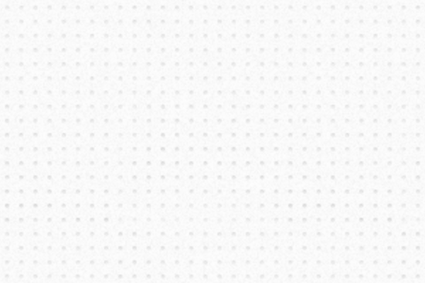

It's easy to get started with Pts. Here we'll review the core concepts and build a fun thing together. Let's do this!

Pts is built upon the abstractions of Space, Form, and Point. If that's too abstract, you can think of it like drawing: Space provides the paper, Form provides the pencil, and Point provides the idea.
Given an idea, you may express it in different forms in different spaces. Would it be expressed in pixels or LEDs? Is it visible or audible? Does it look like abstract art or ASCII art? As Pts develops, it will offer more Spaces and Forms that enable you to experiment with different ideas and their different expressions.
But enough of abstractions for now. Let's see how it works in a concrete example. In the following sections, we will create a quick sketch step-by-step and discuss the main features of Pts.
(If you don't know how npm works, it's not a problem. Skip to next section to use Pts as a script directly.)
If you use npm, first npm install pts and then import the classes you need:
import {CanvasSpace, Pt, Group} from "pts"
To get started quickly with a webpack es6 build, try pts-starter-kit. If you prefer typescript, try this pts-ts-starter-kit by pierpo.
To use Pts in React, take a look at pts-react-example, which provides components built with create-react-app or neutrino.js
Note that Pts is an es6 library, so if you want to compile to es5, import it like this:
import {CanvasSpace, Pt, Group} from "pts/dist/es5"
First get pts.js or pts.min.js. You may get a direct link from a CDN service (eg, unpkg or jsdelivr), or download it from github repo. Include it in your html, and then create another js file for your script and add it too.
<script type="text/javascript" src="path/to/pts.js"></script>
<script type="text/javascript" src="path/to/my_script.js"></script>
When using as a script, we usually start by adding Pts into the global scope first.
Pts.namespace( window );
That means we can call all Pts classes like Group directly, instead of Pts.Group which is a bit clumsy to write.
Note that if you're using Pts.quickStart, there's no need to call Pts.namespace again. See below for details.
The online editor enables you to quickly experiment with Pts and download your code to run locally too. Try the editor here.
Now that we've learned how to run Pts in various ways, it's time to start using it!
Pts provides a CanvasSpace which enables you to use html <canvas> as a space. You can create a CanvasSpace like this:
var space = new CanvasSpace("#hello");
space.setup({ bgcolor: "#fff" });
This assumes you have an element with id="hello" in your html. If your element is <canvas id="hello">, CanvasSpace will target that canvas. Otherwise if your element is a container like <div id="hello">, a new canvas will be created and appended into it. You may also pass an HTMLElement instance directly into CanvasSpace.
The setup function allows you to initiate the space with an object that specifies some setup options, like background-color and auto-resize.
Next, you can get the default CanvasForm which, as we mentioned before, provides the "pencils". CanvasForm helps you draw lines, circles, curves and more on the html canvas.
var form = space.getForm();
Do you know you can create your own forms by extending CanvasForm or Form class? It's like making your own pencils. You can initiate your custom form like this:
// Initiate your own BeautifulForm class
var form = new BeautifulForm( space );
Alternatively, you can use the Quick Start mode to create CanvasSpace and CanvasForm directly. This will create two global variables called space, and it also returns an animate function for you to use. You can do all these in just one line of code:
var run = Pts.quickStart( "#hello", "#fff" );
// quickStart returns a function wrapper for use in animation loop, eg:
// run( function(time, ftime) { ... } );
Now we have paper and pencil. What should we draw?
The space, which we have created, contains some handy variables. For example, the pointer variable tells us the current position of pointer in space (ie, mouse or touch position). Let's use it to draw a point.
To render an animation continuously, we need to add a "player" to the space. A "player" can be a callback function to run your animation, or an object that specifies functions for start, animate, and action. You may add multiple players to a space.
At its simplest form, this is how we can draw the pointer.
space.add( () => form.point( space.pointer, 10 ) );
And here's the result. Touch the demo and move around.
So first we add a "player" as a function to space, and in that function, we use form to draw space.pointer with radius of 10. By default, the point is drawn as a square with red fill-color and white stroke-color.
The animate callback function actually provides 2 parameters: time which gives the current running time, and ftime which gives the time taken to render a frame.
Let's modify the code above to make the circle pulsate.
space.add( (time, ftime) => {
let radius = Num.cycle( (time%1000)/1000 ) * 20;
form.fill("#09f").point( space.pointer, radius, "circle" );
});
Success! The calculation (time%1000)/1000 maps the running time to a value between 0 to 1 every second. Then we use the Num.cycle function to make the value cycle between 0...1...0...1, and we multiply the value by 20 to get the radius. Finally, we draw the pointer with the radius as a blue circle. Pretty easy, right?
There are 3 basic structures in Pts
Pts provides many classes to work with these structures. For example, a rectangular boundary can be defined by two Pts -- one at top-left and one at bottom-right, and you can also get a Group of 4 Pts from its 4 corners.
Let's make this easier to understand with an example:
var rect = Rectangle.fromCenter( space.center, space.size.$divide(2) );
var poly = Rectangle.corners( rect );
poly.shear2D( Num.cycle( time%5000/5000 ) - 0.5, space.center );
form.fillOnly("#123").polygon( poly );
form.strokeOnly("#fff", 3).rect( rect );
What's happening in these 5 lines of code? Let's find out.
The first line create a "rectangle" from a center point, and we specify that the center is space's center and the size is space's half-size. ($divide is a Pt function that calculates division and returns a new Pt.) The variable rect stores a Group of 2 Pts — its top-left and bottom-right positions.
The second line takes rect and get its corners. So the variable poly contains a Group of 4 Pts.
The third line use the Group's shear2D function to shear the polygon at space's center. The amount of shearing cycles between -0.5 to 0.5 every 5 seconds.
The 4th and 5th line just draw the rectangle and the sheared polygon.
Even though it takes words to explain, the code is actually quite simple :)
From here on, it's up to you. Squint your eyes and see what shapes and structures hide between those invisible points, or what motions and interactions could generate unique and expressive forms.
For example, what if we take two corners of the rectangle, and join them with the pointer to draw a triangle?
And what if we also draw the inner circle of each triangle?
This is what you can do with pts in ~15 lines of code.
// setup
Pts.namespace(this);
var space = new CanvasSpace("#hello").setup({ bgcolor: "#fff" });
var form = space.getForm();
// animation
space.add( (time, ftime) => {
// rectangle
var rect = Rectangle.fromCenter( space.center, space.size.$divide(2) );
var poly = Rectangle.corners( rect );
poly.shear2D( Num.cycle( time%5000/5000 ) - 0.5, space.center );
// triangle
var tris = poly.segments( 2, 1, true );
tris.map( (t) => t.push( space.pointer ) );
// circle
var circles = tris.map( (t) => Triangle.incircle( t ) );
// drawing
form.fillOnly("#123").polygon( poly );
form.fill("#f03").circles( circles );
form.strokeOnly("#fff ", 3 ).polygons( tris );
form.fill("#123").point( space.pointer, 5 );
});
space.play().bindMouse();
Also take a look at the alternative quick start mode example in the live editor. Give it a try!
Hope this gives you a quick and enjoyable walk-through. But wait, there's more: Take a look at the other guides which will explain Pts features in details.
We appreciate your feedbacks and bug reports. Please file an issue at github or ping @williamngan on twitter.
Enjoy and have fun!